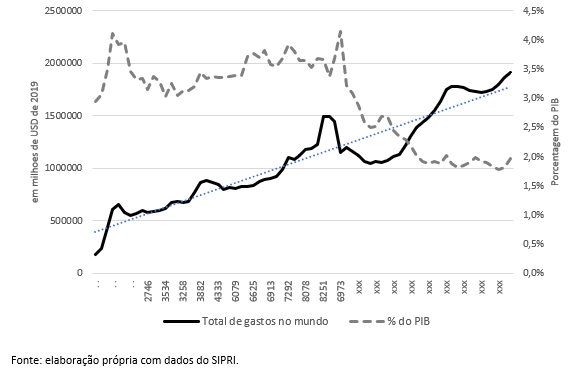
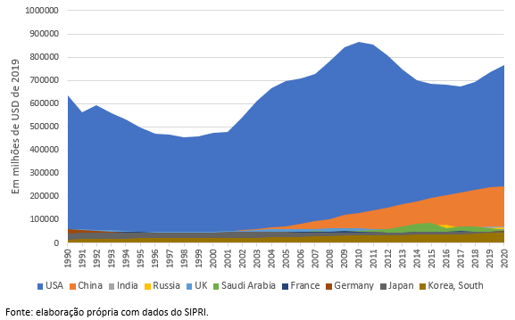
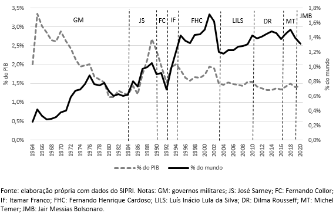

Um breve histórico da evolução dos gastos militares no mundo e no Brasil
Esse breve artigo tem o intuito de apresentar, de maneira sucinta, a evolução dos gastos militares em uma perspectiva histórica ampla. O intuito desse exercício é explorar a evolução da importância do orçamento, com vistas a entender a dinâmica com os momentos históricos vividos na economia mundial, em geral, e no Brasil, em especial.
Os dados foram extraídos da plataforma SIPRI (Stockholm International Peace Research Institute) e estão disponibilizados publicamente aqui. O horizonte temporal considerado para a análise abarca todo o período disponibilizado pela base, que vai de 1949 a 2020.
Para nos situarmos na situação geral, o primeiro gráfico apresenta a evolução dos gastos a nível mundial, observando gastos totais (em valores constantes de USD de 2019) e em porcentagem do PIB.

A queda do orçamento como participação do PIB a partir de 1990 é algo a ser destacado e reflete o movimento já evidenciado na literatura de defesa, justamente o fim da Guerra Fria (HARTLEY; SANDLER, 1995). Um ponto importante, porém, é que essa mudança de patamar só é seguida pelo total do orçamento de defesa até o final dos anos 1990, quando há uma reversão para crescimento, voltando de alguma maneira ao mesmo padrão de crescimento verificado nos anos pré-Guerra Fria (evidenciado pela linha de tendência em azul). A evolução das dez principais potências do mundo em orçamento militar em 2020 demonstra os principais players para a evolução desse movimento.

Em resumo, duas principais mudanças podem ser destacadas: a volta do orçamento militar americano a patamares maiores já em 2001, reflexo dos atentados terroristas em solo estadunidense (ataques às torres gêmeas e ao Pentágono), e o aumento do orçamento militar chinês, também já a partir do mesmo período, em par com o aumento da importância econômica da China e a busca por capacidades dissuasórias no jogo de poder internacional. A China passa a responder, em 2020, a 12.8% de todo o orçamento mundial em defesa, ante a 4.3% em 2001 (crescimento de 198%).
Pode-se observar, portanto, que a diminuição da participação interna no PIB no contexto geral não expressou, necessariamente, a queda da importância dos orçamentos públicos para defesa nos principais países. Em resumo, a pressão das novas fronteiras de guerra – com a ascensão do terrorismo e inserção do exército americano em territórios de conflito na Ásia e Oriente Médio – e a pressão chinesa elevaram a importância militar; juntos, os dois países respondem em 2020 por 53% de todo o orçamento militar mundial.
Adicionalmente, é importante salientar que, especialmente durante a Guerra Fria, a ciência e a tecnologia, com suas conexões industriais, tornaram-se decisivamente estratégicas na disputa militar como vetores da defesa nacional. Essa reordenação afetou a produção industrial e o próprio ambiente de combate, tornando a evolução das capacidades militares mais dependentes das capacidades científicas e tecnológicas, no limite igualando “conhecimento” a “poder” (PAARLBERG, 2004). Como observado por Dunne (1995, p. 405) a exigência de uma Base Industrial de Defesa migrou da necessidade de ‘…manter instalações de produção completas para a possibilidade de manter a autonomia estratégica por meio da manutenção da capacidade tecnológica para produzir sistemas avançados de armas’. Esse aumento do aparato tecnológico gera pressão monetária que se evidencia no aumento dos custos de produção e, consequentemente, no custo de aquisição dos equipamentos militares.
E o Brasil?
O Brasil possuía, em 2020, o 13º maior orçamento militar do mundo com um valor de USD 25 bilhões (valores de 2019), mantendo essa posição intermediária, com leves mudanças, desde o início dos anos 2000. Para observar a evolução dos dados nacionais, optamos por diminuir o horizonte temporal, para captar mudanças resultantes de questões políticas, considerando os valores a partir de 1964, quando se inicia os governos militares.

A evolução mostra que o comportamento do orçamento público no Brasil é ditado, em muitos momentos, pelo componente político. Apesar de ser vivenciado um governo militar até 1985, o orçamento como proporção do PIB cai bastante nesse período, e o aumento da porcentagem do orçamento mundial não consolidou valores maiores do que o do período democrático, que apenas atravessou o valor de 1% de participação mundial após o governo de Itamar Franco. É verdade que a participação no valor total mundial é influenciada pela taxa de câmbio do período, o que explica o aumento, principalmente, entre 1994-2001. De qualquer forma, o aumento de participação do orçamento militar no PIB nos governos José Sarney e Itamar Franco são bastante expressivos, e a queda nos governos militares e no governo de Fernando Collor também são claras.
No período mais recente – a partir do governo FHC –, o orçamento como proporção do PIB variou entre 1.5% e 2%, atingindo o valor de 1.5% a partir do governo Lula e lá permanecendo, com poucas variações, até o período atual (mantendo uma média de 1.4% durante os últimos governos – Dilma Rousseff, Michel Temer e Jair Messias Bolsonaro).
Essa manutenção durante os últimos 18 anos parece indicar que há, a partir de então, uma mudança política importante no orçamento militar, onde é estabelecida uma constância de investimentos, inerente a uma política de Estado, condição relevante para a manutenção e crescimento programado de políticas estratégicas para a Defesa nacional. Esse processo, aliás, é condizente com o processo de maior institucionalidade das estratégias de defesa nacional, com a criação do Ministério da Defesa (1999), o Plano Nacional da Indústria de Defesa (2005) e a Estratégia Nacional de Defesa (2008), dentre outros aspectos específicos. Cabe verificar, porém, a formatação desse orçamento, para entender como o planejamento estratégico influenciou e foi considerado para a consecução de estratégias de defesa. Esse é um tema para um próximo artigo.